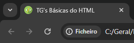

Um favicon é uma pequena imagem exibida ao lado do título da página na guia do navegador. Um favicon é uma imagem pequena, portanto deve ser uma imagem simples com alto contraste.
Para adicionar um favicon ao seu site, salve sua imagem de favicon no diretório raiz do seu servidor web ou crie uma pasta no diretório raiz chamada imagens e salve sua imagem de favicon nesta pasta. Um nome comum para uma imagem de favicon é “favicon.extensao”.
Em seguida, adicione um <link> elemento ao seu arquivo “index.html”, após o <title> elemento, assim:
Um exemplo desse aplicação está na própria página onde você se encontra.
